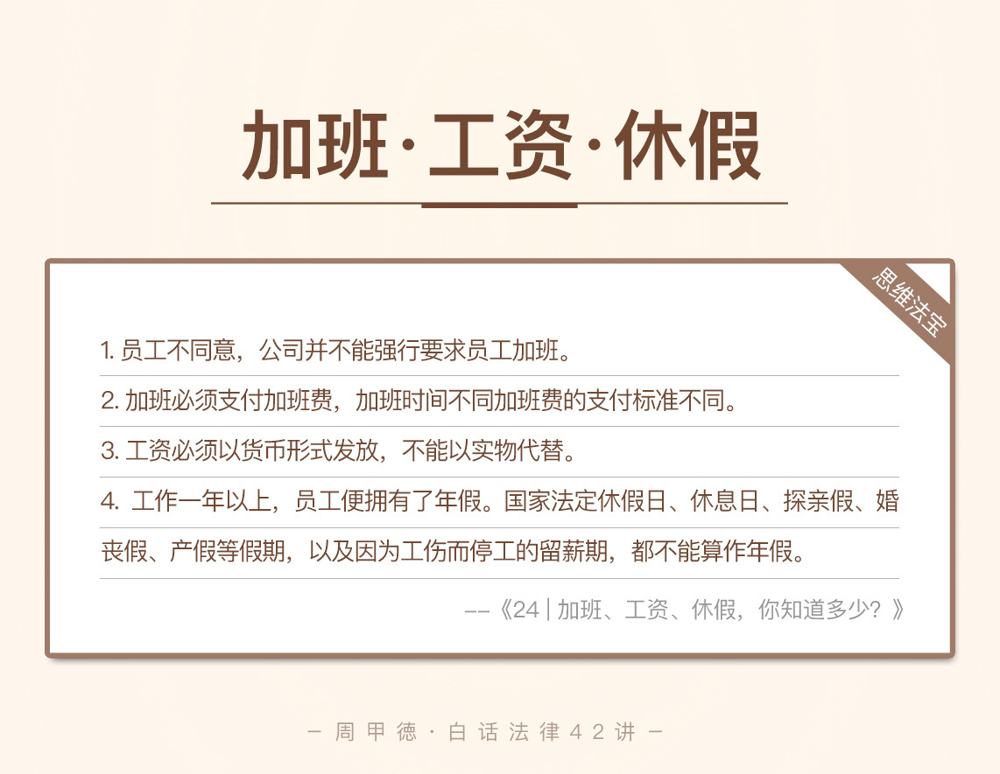

- 00 开篇词 这年头，你真应该懂点法律常识.md
- 01 “老周，我想知道” 常见法律认知盲区（一）.md
- 02 “老周，我想知道” 律师就在你身边（二）.md
- 03 “老周，我想知道” 律师就在你身边（三）.md
- 04 “老周，我想知道” 律师就在你身边（四）.md
- 05 创业未捷老板跑，社保工资哪里讨？.md
- 06 保密还是“卖身”，霸王条款怎么看？.md
- 07 编造流言蹭热度？看守所里降温度！.md
- 08 合同在手欠款难收，报警有用吗？.md
- 09 致创业：谁动了我的股权？.md
- 10 又见猝死！工“殇”究竟是不是工伤？.md
- 11 期权的“前世今生”.md
- 12 裁员面前，你能做的还有什么？.md
- 13 抄袭、盗图为什么做不得？.md
- 14 加班、工资、休假，你知道多少？.md
- 15 受贿原来这么“容易”.md
- 16 今天你用“VPN”了吗？.md
- 17 漏洞在眼前，可以悄悄破解吗？.md
- 18 “爬虫”真的合法吗？.md
- 19 非法集资到底是个啥？.md
- 20 黄色网站？不仅仅是“黄色”罪名.md
- 21 谁修改了我的积分资产？.md
- 22 外挂真能大吉大利吗？.md
- 23 如何看待“从删库到跑路”？.md
- 24 “伪基站”是你的避风港吗？.md
- 25 “网络诈骗”真的离你很远吗？.md
- 26 智斗中介：“北上广”租房图鉴.md
- 27 买买买！买房的“避坑”指南.md
- 28 闪婚又闪离，彩礼怎么理？.md
- 29 离婚还想和平？你要这么做.md
- 30 遗产继承的爱恨情仇.md
- 31 骗术升级？假结婚、假离婚的那些事儿.md
- 32 孩子学校受伤，谁之过？.md
- 33 如何让欠债还钱真正“天经地义”？.md
- 34 从透支到盗刷：人人须知的银行卡纠纷.md
- 35 远离“套路贷”的套路大全.md
- 36 危险！酒驾为什么被罚那么重？.md
- 37 老人倒地，“扶”“不服”？.md
- 38 “能动手就别吵吵”，代价你真的知道吗？.md
- 39 发生交通事故，如何处理？.md
- 40 交通事故综合法宝.md
- 41 婚姻家庭综合法宝.md
- 42 买卖房屋综合法宝.md
- 一键直达 法律专栏“食用”指南.md
- 加餐 “新冠肺炎”影响下，17个常见法律问题解答.md
- 结束语 法律，不会终止的篇章.md
14 加班、工资、休假，你知道多少？
每天起早贪黑干活儿，这搁过去，说的是农田的劳作者；而现在，说的是大多数在大城市里打拼的人。昨天一大早五点多起床，坐高铁去千里之外的地方开庭，开完庭再坐夜里的车赶回北京，到家已经深夜，这就是我一个律师的日常。
程序员同学可能更是如此，加班是再正常不过的事情了。前面的一篇文章，我们讲过了加班如果出了问题怎么办，但是还没讲到加班本身。那么，
加班待遇，你又了解多少呢？
你真的清楚工资的构成吗？
休假的具体规定，你是不是迷迷糊糊呢？
今天，我们就来聊一聊加班、休假、工资的那些事，让你明明白白加班，明明白白拿钱。
老规矩，我们先来看一个案例，程序员小刘的故事。
小刘大学学了计算机专业，毕业后去了一家科技公司工作。因为没有女朋友，租的房子又在公司附近，所以基本上天天在公司里泡着。因为公司承诺了半年内一定加薪，所以天天加班成了小刘的常态，甚至在法定节假日里被安排加班，小刘也毫无怨言。
可是，一年多过去了，公司再不提当初口头答应加薪的承诺，也没有给过一次加班费，甚至还欠了两个月的工资没发。马上就是年底了，小刘再好的脾气，也产生了怀疑，公司这样做真的合法吗？他应该怎么办呢？
相信你对这样的情况也不陌生，结合我们前面学过的裁员知识，你也可以自己先分析一下。如果对这里不太清楚，我们先来看几个相关的法律知识。
法律知识
第一个概念，工资。工资是我们收入的主要组成部分，除此之外，员工的收入还包括家教费、翻译费等兼职所得，以及生育津贴等其他方面的收益。那法律上的工资是怎么定义的呢？
《劳动合同法》里规定，公司要向员工及时支付足额的劳动报酬。劳动报酬分为三个部分：
一是工资，包括基本工资、奖金、津贴、补贴等；
二是实物报酬，包括公司发的各种物品或是提供的有价服务等；
三是社会保险，主要就是我们所说的“五险”。
所以我们法律上所讲的工资，是劳动报酬的一部分。这里需要注意的是，工资必须以货币的形式发放，不能用实物或其他有价证券的形式代替。
特别补充一下不少人关心的试用期问题。法律规定，试用期的工资，不应该低于本公司相同岗位最低档工资或劳动合同约定工资的80%，也不应该低于公司所在地的最低工资标准。
第二个概念，加班。《劳动合同法》里规定，公司不得强迫或者变相强迫员工加班。如果公司安排加班，应该按照国家规定，向员工支付加班费。
首先我们要了解加班时间的规定。我们实行的是8小时工作制，但并没有禁止公司安排8小时外的加班，只不过，法律上要求，公司安排加班，必须符合《劳动合同法》的限制性规定。
法律规定，一般情况下：
每天安排的加班时间，不能超过1小时；
如果因为特殊原因需要延长，在保障员工身体健康的条件下，每天不超过3小时；
每月安排的加班总时间，不能超过36小时；
另外，公司不能安排未成年人、怀孕女员工以及哺乳期未满一年的女员工加班。
我们还要了解加班费的规定。根据加班时间的不同，加班费的标准也不同。
如果是普通工作日加班，公司应该1.5倍工资作为报酬；
如果是休息日加班，公司应该发2倍工资作为报酬，或者可以选择补休；
如果是法定节假日加班，公司应该发3倍工资作为报酬，不能选择调休来补偿。
第三个我们来看休假这个概念。休假也就是我们的假期，包括法定休假日、年休假、休息日、职工探亲假。其中我们熟悉的元旦、春节、五一劳动节、国庆节、中秋节等，都属于法定休假日。
年休假，也就是我们通常所说的年假，是指员工每年可以享受的，保留工作和工资的一段连续休息时间。我国实行的是“带薪年休假”制度，也就是员工连续工作1年以上的，可以享受带薪休年假。
根据《职工带薪年休假条例》规定，根据累计工作的时间，已满1年不满10年的，有5天带薪的年假；
已满10年不满20年的，有10天带薪的年假；
已满20年的，有15天带薪的年假。
休息日就很好理解了，我们平时的双休日、调休的休息日、法定节假日之外的其他放假时间等，都属于休息日。而职工探亲假，好像大多数公司都没有，不过吧，这个福利如果也要给，估计好多老板都得哭了。所以，我们知道有这么个事就行了，也不要太过于计较。
情景分析
现在我们再来看小刘的问题。
讲道理，我实在找不到小刘继续留在这家公司的理由了。如果非要找一个的话，那就是留下来取取证，找公司要够工资、要够加班费，然后再休个年假，再提出辞职。换工作，一定是小刘的最好选择。
那么小刘具体应该考虑哪些利益呢？
首先是拖欠的工资及加班费。其中，要注意加班费的计算，上面我们讲过。另外，如果公司安排了加班，却不给加班费，也不按时发工资，可以求助劳动行政部门。在规定期限内公司仍没支付的话，公司还应该按照应付款的50%～100%，支付赔偿金。
第二个便是年假问题。小刘已经工作一年以上，按理来说公司应该安排年假。不过要明确，年假的具体时间是要和公司协商的，毕竟也不能你说啥时候休，公司就必须立刻安排好这个时间。当然，如果直到离职，公司还没安排年假，那么公司就需要按年假天数发工资。
思维法宝
讲了这么多，估计你心里已经在悄悄计算，自己的工资或是年假、加班费了。我们总结一下今天的内容。

第一，一般情况下，员工不同意，公司并不能强行要求员工加班，更不能认为，员工不同意加班就是不服从公司安排。加班必须支付加班费，而加班时间不同加班费的支付标准不同。
第二，工作一年以上，员工便拥有了年假。国家法定休假日、休息日、探亲假、婚丧假、产假等假期，以及因为工伤而停工的留薪期，都不能算作年假。
第三，工资必须以货币形式发放，不能以实物代替。如果公司拖欠工资，或者没有足额支付工资，员工可以向有管辖权的人民法院申请支付令，维护自己的权益。
加班工资休假，这些跟我们职场密切相关的内容，你一定要有所了解。关于今天的内容，你还有哪些地方存在疑惑吗？或者有发生过类似的经历吗？欢迎留言和我分享，也欢迎你分享给身边的亲人朋友。清楚了解，是我们不吃亏上当的最低保障。
© 2019 - 2023 Liangliang Lee. Powered by gin and hexo-theme-book.